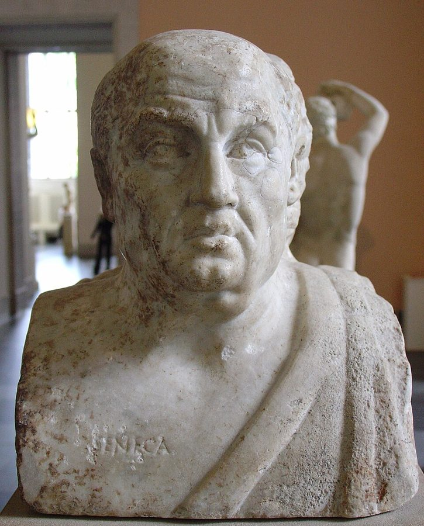
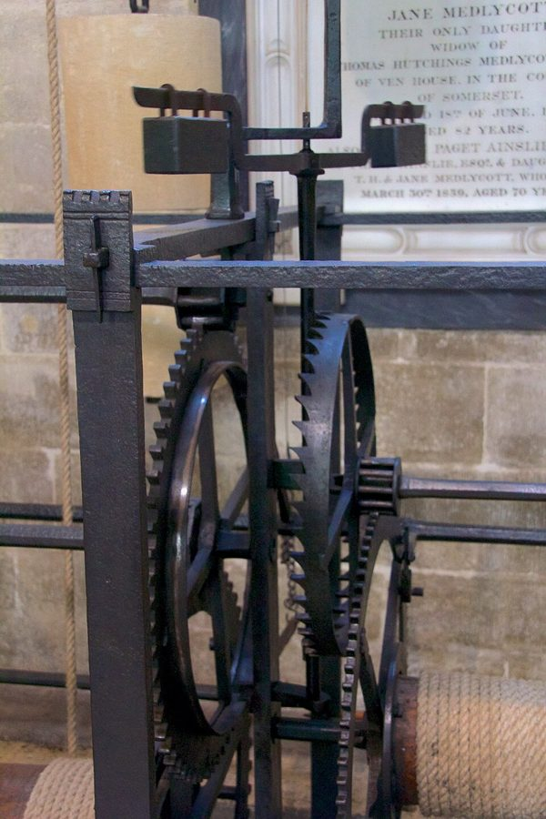
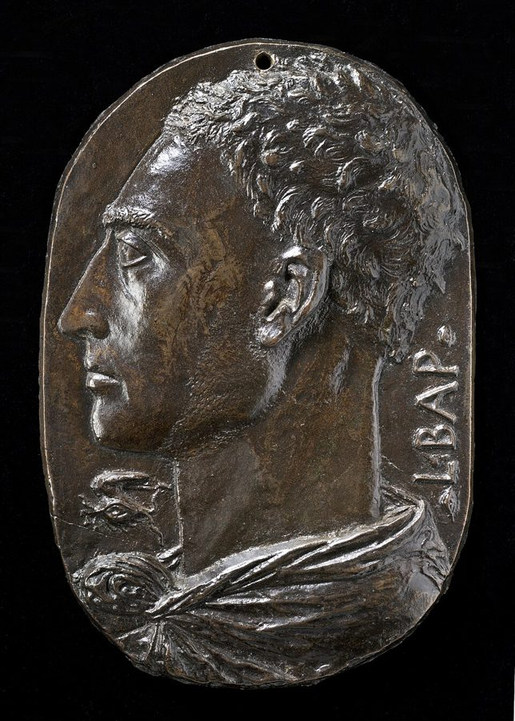
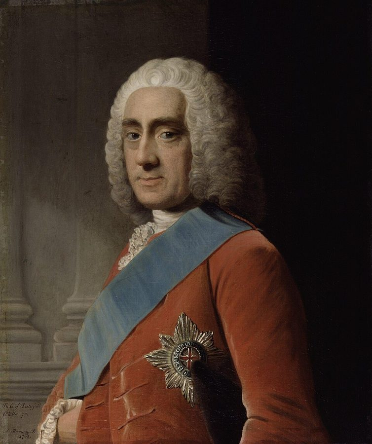
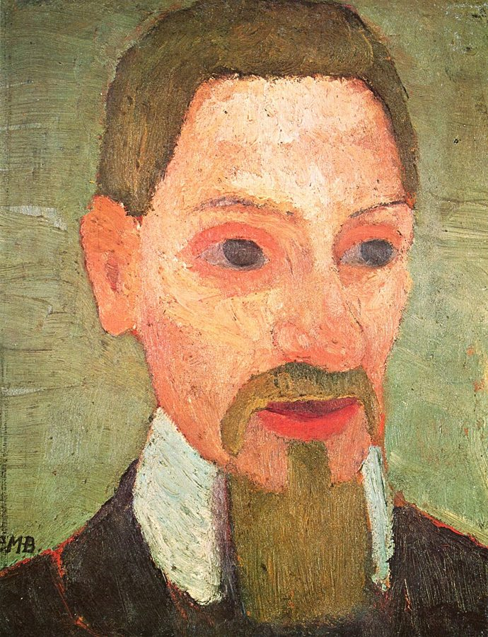

这一页在做什么
这一页三节，跨了三个时代、四个人，都在算时间的账。古罗马的塞涅卡回应希波克拉底那句箴言，把时间比作钱；文艺复兴时的阿尔贝蒂生活在钟楼上已有机械钟的意大利，借对话里一位老人之口，把一天按钟点排好；18 世纪的切斯特菲尔德写信教儿子别浪费时间，里尔克小说里的一个小公务员自己学着省时间。读的时候抓两条线：「经济」这个词的意思怎么变，时间像钱这个比喻怎样一路传下来。

柏林古典文物收藏馆里一座双头像的塞涅卡那一面，胸前刻着他的名字；背面是苏格拉底。Calidius，CC BY-SA 3.0，维基共享资源 读之前：这一页在全书的哪里
上一页立了题：生命短、技艺长，中间的落差叫时间剪；作者只谈人一生的时间，说它看来原则上是短的，所以要讲经济。这一页就沿着「经济」往下走。第 36 段说塞涅卡的比喻预示了第 3 章富兰克林的「时间就是金钱」；第 59 段说那位小公务员很难想象读过富兰克林或韦伯，也是在给第 3 章铺路。第 2 章讲彼特拉克和歌德时，作者还会回头提塞涅卡。
如果时间真像钱，人该怎样「花」它？这个想法从塞涅卡传到阿尔贝蒂、切斯特菲尔德，变了什么，没变什么？
读的时候带着这几个问题。不用先找答案，读完回来对照「检查一下理解」。
塞涅卡同意希波克拉底说生命短吗？在他看来，谁的生命短，为什么短？§2
塞涅卡要留一块「自己的时间」，阿尔贝蒂笔下的老人为什么连闲暇也要管起来？§3
切斯特菲尔德的家书和库斯米奇的自学，作者觉得结果怎样？库斯米奇最后靠什么把时间拉长？§4
这一页的路线
三节各讲一两个人，彼此不接话，串起它们的是两样东西：时间像钱的比喻，和「经济」这个词。§2 接着希波克拉底的箴言讲，中途插进塞涅卡的生平，第 33 段说先放下，第 41 段才讲完，所以这一节头尾都是传记。§3 不从阿尔贝蒂讲起，先讲「经济」的词史和古代修辞学，再一句话跳过一千多年到机械钟，第 45 段阿尔贝蒂才出场。第 53 段开头说要给这一章收尾，后面却还有 §4，不必奇怪。§4 中间有一处花饰分隔：前半是真人切斯特菲尔德写信教儿子，后半是里尔克小说里的虚构人物自己教自己，作者说两者相隔两百年。
§2 第 32–41 段
§3 第 42–53 段
§4 第 54–60 段
塞涅卡 回应箴言
时间像钱
自己的时间
被逼自尽
经济的词史
修辞的安排
机械钟
阿尔贝蒂 按钟点排一天
切斯特菲尔德 真人的家书
时间的零钱
库斯米奇 小说人物
艺术来帮忙
本站示意图。蓝点是人物和作品，橙点是概念，折线是阅读顺序，虚线是节的分界。§4 里的花饰分隔在切斯特菲尔德和库斯米奇之间。 作者落在哪： 作者没有在这一页下总的结论。他让时间像钱这个比喻走过三个时代：塞涅卡拿它讲德行，阿尔贝蒂拿它排一天，切斯特菲尔德和库斯米奇拿它省分秒，后两人都不太成功。最后落在第 60 段：艺术要来帮生活的忙。
分节地图
这一页是原书第 1 章的第 2–4 节。粗体是这一节的主角；斜体是英文这一节开头的几个词，在电子书里搜它就能跳到那里；节里的转折用段号点出来。读完打个勾。
塞涅卡《论生命之短暂》约 1300 词 Hippocrates' aphorism has left a deep … 第 35–40 段是塞涅卡的论证，前后夹着他的生平。第 38 段是他对箴言的回答。 阿尔贝蒂《家庭论》里的一天约 1300 词 The concept of economy, which originally meant … 先讲「经济」的两层旧意思，第 44 段跳到机械钟，第 45 段起才是阿尔贝蒂。 切斯特菲尔德的家书，里尔克笔下的小公务员约 900 词 In the fifteen years between 1739 and … 第 59 段起换到里尔克的小说。第 60 段是这一章的最后一段。
先用中文过一遍：这一页的概念
作者常常一笔带过、默认你懂的概念，这里先从书外讲一遍：它从哪来，是什么意思。它在这一页起什么作用，看每块最后一句。讲过的概念都汇总在概念汇总 。上一页讲过的时间就是金钱 ，这一页处处用到。
§2 生命时间 life-time（德文 Lebenszeit） 德文 Lebenszeit 在日常话里就是「一辈子」。这本书把它当术语用：指的不是寿命那个数字，而是被活着、被经历的那段时间本身。英译者 Rendall 在第 1 章尾注 15 说明，他故意写成有点别扭的 life-time，不用 lifetime：lifetime 说的是寿命长短，life-time 说的是「当作生命来看的时间」。打个比方：「这台服务器的寿命是五年」只是一个数；「这五年里它每一秒在干什么」才是能被花掉、被占满、被浪费的东西。第 7 章作者讲布鲁门贝格的书《生命时间与世界时间》（1986），这个词会和「世界时间」配成一对。
在这一页： 第 36 段第一次出现（复数 life-times），第 54、60 段又用。见到带连字符的 life-time，就按这个术语读。
§2 闲暇和「自己的时间」 otium，tempus suum；occupati 拉丁文 otium 指不被公务占据的时间。它的反义词 negotium（neg- 加 otium，「不闲」）就是公务、生意，英文 negotiate 由此而来。罗马的上层人物一生多在两者之间分配：做官、打理产业是 negotium，退下来读书、写作、思考是 otium。所以 otium 不是今天说的休闲娱乐，而是留给学问和修身的时间；希腊文的「闲暇」scholē 后来成了 school 的词源，也是这个道理。和它相对的人，塞涅卡叫 occupati，「被占住的人」：事务一件接一件，从来轮不到自己。好比一个日历被会议排满的工程师，可能一整年都没有一整块时间想一个问题。
在这一页： 第 37 段的 occupati，第 39–40 段的 tempus suum 和 otium。第 47 段阿尔贝蒂连闲暇（意大利文 ozio）也要管起来，正好对照。
§3 经济 oikonomia（拉丁文 oeconomia） 希腊文 oikonomia 由 oikos（家）和 nomos（规矩、管理）合成，本义是管家：一家的粮食、钱财、人手怎么分派。古代修辞学借了这个词。修辞学把做一篇演说分成五步：觅材（inventio）、布局（dispositio，希腊文 taxis）、措辞、记诵、发表。「经济」说的就是第二步：找到的材料排成什么先后。照事情本来的顺序叫 ordo naturalis；打乱了、从中间讲起叫 ordo artificiosus，《奥德赛》就是从中间讲起的。管家要分派东西，布局要分派先后，两种意思都落在「怎样分配有限的东西」上，后来「经济」又泛指省着用。写程序的人熟悉的「排期」也是这样：同一堆任务，排法不同，结果两样。
在这一页： 第 42–43 段讲两层旧意思，第 46、52 段阿尔贝蒂把家政、修辞的安排和时间接到了一起。
书里的人和作品
按在书里出现的顺序排，标题前是节号。作品只讲到读懂这几节需要的程度。
§2 塞涅卡和《论生命之短暂》塞涅卡（Lucius Annaeus Seneca，约前 4–65）生在西班牙的科尔多瓦，斯多葛派哲学家，也写悲剧。公元 41 年被流放到科西嘉岛，49 年召回，做了少年尼禄的老师，尼禄即位后成了掌权的重臣。《论生命之短暂》（De brevitate vitae）是写给一位叫保利努斯的官员的短文，写作年份有几种说法，书里取 49 年。开头就引希波克拉底的箴言，随即反驳：不是生命短，是我们把它浪费了。晚年的《道德书简》第 1 封又从时间讲起：别的都是别人的，只有时间是我们自己的。作者拿他说明，把时间当钱看的比喻，在罗马成了一条做人的道理。
§2 书里顺手提到的人第 39、41 段为了说明享乐派、忙人和暴君，提了几个人，作者没有介绍。塞涅卡在《论生命之短暂》第 4、5 章里拿奥古斯都和西塞罗当忙人的例子。
贺拉斯 Horace，前 65–前 8 罗马诗人。第 39 段那句「活得快活，别忘了寿命多短」出自他的《讽刺诗》第二卷第 6 首，是城里老鼠劝乡下老鼠进城享乐时说的话。
奥古斯都 Augustus，前 63–14 罗马第一位皇帝。塞涅卡说他一辈子都在盼望闲暇，却一直没能歇下来。
西塞罗 Cicero，前 106–前 43 罗马政治家、演说家。塞涅卡引他的信，说他在乡间别墅里自叹只是「半自由」的人。
尼禄 Nero，37–68 罗马皇帝，54 年即位，塞涅卡做过他的老师和大臣。65 年塞涅卡被疑参与谋反，奉命自尽。
拉辛 Jean Racine，1639–1699 法国悲剧作家。他的《布里塔尼居斯》（1669）写少年尼禄，序里称他是「初生的怪物」，第 41 段引的就是这句。
§3 赫马戈拉斯和昆体良第 42、43 段两处古人的说法，其实出自同一段书。罗马修辞学家昆体良（Quintilian，约 35–约 100）在《雄辩术原理》第三卷第 3 章说：赫马戈拉斯把判断、划分、排序和措辞都归在 oeconomia 名下；这个希腊词本来说的是「照料家中事务」，用到修辞学里是借用，拉丁文没有对应的词。赫马戈拉斯（Hermagoras of Temnos）是希腊修辞学家，书里说他在「公元 2 世纪」，一般定在公元前 2 世纪，比昆体良早两百来年。作者拿这段词史说明：修辞学的「经济」从一开始就有时间的一面。
§3 钟楼上的机械钟欧洲的机械钟出现在 13 世纪末，靠重锤下坠驱动，用擒纵机构把下坠切成一下一下的节拍。早期的大钟多装在教堂和市政厅的塔楼上，敲钟报时，全城听同一个钟点。书里注 21 引的 Dohrn-van Rossum《钟点的历史》（1992）讲的就是这段历史。作者在第 44 段说，钟表只能量相对短的时间，所以钟表时间根本上是有限的；这句话是这一节的转折，阿尔贝蒂就是在这样的时代里写作的。

英国索尔兹伯里大教堂的机械钟，说明页说约造于 1386 年，是世界上最古老的机械钟之一。竖着的冠状齿轮属于擒纵机构。比阿尔贝蒂的对话早约半个世纪，与本书没有直接关系。Mike Peel，CC BY-SA 4.0，维基共享资源 §3 阿尔贝蒂和《家庭论》阿尔贝蒂（Leon Battista Alberti，1404–1472）是佛罗伦萨阿尔贝蒂家族流亡在外时生的私生子。他写过《论绘画》和《论建筑》，也替人设计教堂，布克哈特拿他当文艺复兴「全才」的典型。《家庭论》是四卷意大利文对话，场景设在 1421 年的帕多瓦，几位族人谈怎样持家。第三卷题为 Economicus，主讲的是年长的族人 Giannozzo，自称不通文墨，全凭阅历讲「持家」（masserizia）：灵魂、身体、时间和钱财怎样管好。书里说成书于 1437–41 年，一般认为前三卷写于 1433–34 年前后。第 49、50 段的一天，就是这位老人讲的。带翅膀的眼睛是阿尔贝蒂给自己定的徽记。

阿尔贝蒂的青铜自画像浮雕，约 1435 年，现藏华盛顿国家美术馆。下巴前有一只带翅膀的眼睛，右边刻着 L·BAP。Leon Battista Alberti，公有领域，维基共享资源
布克哈特 Jacob Burckhardt，1818–1897 瑞士历史学家，《意大利文艺复兴时期的文化》（1860）的作者。第 45 段的「全才」就是他的说法。
基特勒 Friedrich Kittler，1943–2011 德国媒介理论家。第 45 段引他 2004 年在报上称阿尔贝蒂是「现代第一位城市规划师」。
格拉夫顿 Anthony Grafton，1950– 美国历史学家，2000 年出过一本阿尔贝蒂传。第 53 段「自我创造的艺术家」是他的说法。
§4 切斯特菲尔德和《致子书》切斯特菲尔德伯爵（Philip Dormer Stanhope, 4th Earl of Chesterfield，1694–1773）是英国政治家、外交官，以口才和风度出名。他的私生子 Philip Stanhope（1732–1768）从五六岁起就不断收到父亲的信，学问、礼仪、处世无所不教。父子都去世后，儿子的遗孀在 1774 年把信出版。书里说通信在 1739–54 年间，第 56 段却引了一封 1738 年的信：现存的信 1737、1738 年就开始了，一直写到儿子去世。不少选本删去了 1739 年 10 月以前写给幼童的信，书里的起点也许是照这类选本说的。

Allan Ramsay 1765 年画的切斯特菲尔德，左下角写着他当时的年龄 70，现藏伦敦国家肖像馆。Allan Ramsay，公有领域，维基共享资源 §4 里尔克和《马尔特手记》里尔克（Rainer Maria Rilke，1875–1926）生在布拉格，用德文写诗，1902 年起长住巴黎。《马尔特·劳里茨·布里格手记》（1910）是他唯一的长篇小说，由一位流落巴黎的丹麦年轻诗人的笔记组成，一则一则，没有连贯的情节。尼古拉·库斯米奇是马尔特那栋楼里的邻居，一个俄国小公务员，只在几则笔记里出现。他念的普希金（1799–1837）和涅克拉索夫（1821–1878）都是 19 世纪的俄国诗人。作者把这个虚构人物和切斯特菲尔德放在一节：一个是父亲教儿子，一个是自己教自己，都想像省钱一样省时间。

Paula Modersohn-Becker 1906 年画的里尔克，左下角签着 PMB。Paula Modersohn-Becker，公有领域，维基共享资源 词与短语
你用 Kindle，单个生词长按就能查，这里只收词典帮不上的：每个词都认识、合起来不懂的说法，学术腔，没翻译的外文，典故。斜体小字是原句里连续的几个词，错字照电子书原样，搜它就能跳到那里。
§2 塞涅卡《论生命之短暂》
On the Shortness of Life
… in the treatise On the Shortness …
（书名）《论生命之短暂》
拉丁文书名 De brevitate vitae 紧跟在括号里。屏幕上没有斜体，认不出是书名。
not to be confused with
… not to be confused with his …
别和……弄混
他父亲也叫塞涅卡，教修辞学，后人叫他「老塞涅卡」。
as a result of favorable or unfavorable circumstances
… as a result of favorable or unfavorable …
不知该算好运还是厄运的机缘
作者故意不说是福是祸：召回以后他当了尼禄的老师，风光多年，最后也是被尼禄逼死的。
lapidary
… in making the lapidary observation, …
（话）简短有力的
本义是「刻在石头上的」：碑文字少，句句要紧。不是作名词时「宝石匠」的那个意思。
maximus medicorum
(maximus medicorum), as the starting point
（拉丁文）医生中最伟大的
《论生命之短暂》第 1 章开头的说法，接着就是下面那句箴言。
concede at the outset
He concedes at the outset that …
一上来就承认
concede 是辩论里的让步：先承认对方说得对，后面准有一个「可是」。塞涅卡的保留在第 38 段。
vitam brevem esse, longam artem
(vitam brevem esse, longam artem).
（拉丁文）生命是短的，技艺是长的
拉丁文间接引语，动词用不定式 esse：「（他说）生命短、技艺长」。语序是交叉的：短在生命后面，长在技艺前面。
res incorporalis
… it is a res incorporalis, which …
（拉丁文）无形之物
罗马法把财产分成有形的（土地、奴隶、钱币）和无形的（债权、权利）。塞涅卡说时间正因为无形，才没人把它当财产。
strike the eye
… does not strike the eye with …
一眼就引人注意
strike 在这里不是「打」，是「给人印象」。时间不像金币那样亮闪闪摆在眼前。
quasi gratuito
… almost nothing (quasi gratuito), even though …
（拉丁文）好像不要钱似的
gratuitus 是「免费的」，英文 gratuitous 来自它。英译 as almost nothing 把「白给的」这层意思弄淡了。
res omnium pretiosissima
… in the world: res omnium pretiosissima. …
（拉丁文）万物之中最贵重的东西
塞涅卡原句在第 8 章，带着怒气：人们拿这件最贵的东西当儿戏。-issima 是最高级，阿尔贝蒂第 46 段的 preziosissima 是同一个词变过来的。
invest (collocare)
… to invest (collocare) their precious life-times …
把（钱）放出去生息
collocare 本义「安放」，用在钱上是放贷、投资。第 36 段几个拉丁词都是罗马人记账、放款的行话：imputare 记到账上，ad computationem revocare 拿来结算，in reditu esse 有进项。
slip through their fingers
… made their lives slip through their …
从指缝里溜走
本来说抓不住的东西。这里主语是忙碌：是忙，让日子溜走的。第 59 段的秒钟又「从指缝里跑掉」（run through his fingers），说法几乎一样。
but not only for them
… but not only for them, life …
而且不只是对他们
像是作者的插入语，话头越出了塞涅卡说的那些忙人：别的人也一样。
brevissimam esse occupatorum vitam
… so short (brevissimam esse occupatorum vitam).
（拉丁文）忙人的一生最短
《论生命之短暂》第 10 章的话。occupati 见概念块「闲暇和自己的时间」。
only partially valid
… aphorism is only partially valid.
只说对了一半
这是塞涅卡的看法，作者在转述（in Seneca’s view）：箴言的前半句只对忙人成立。
satis longa
(satis longa), and for some people
（拉丁文）足够长
《论生命之短暂》第 1 章：生命足够长，只要整个用好。后面的 longissima 是最高级「极长」。
protinus
(protinus), making use of every day
（拉丁文）往前；立刻
英译只给了字面的 forward。塞涅卡第 9 章的原话是 protinus vive：别等明天，现在就活。重点在「立刻」，不是「向前看」。
neoEpicureans
The neoEpicureans, for example the poet …
伊壁鸠鲁派的后学
即 neo-Epicureans。伊壁鸠鲁派以安宁的快乐为善。贺拉斯在诗里自称「伊壁鸠鲁猪群里的一头猪」，是自嘲。
the art of enjoyment
… practiced the art of enjoyment.
享受生活的本事
这一页的 art 都是「要学的本事」：第 40 段的 the art of dying well，第 47 段的 the art of correctly using time。回到上一页的
技艺 那层意思。
Vive beatus, vive memor quam sis aevi brevis
… in accord with Horace's maxim: …
（拉丁文）活得快活；活着，别忘了你的寿命多短
贺拉斯《讽刺诗》第二卷第 6 首第 96–97 行。在诗里这是城里老鼠劝乡下老鼠进城享乐的话；乡下老鼠进了城，遇上狗，吓得逃回家去。作者只当格言用。
although never to excess
… although never to excess. …
但别过了头
接的是 assume public responsibilities：斯多葛派要人担公职，可又不能被公职吃掉。下文的奥古斯都、西塞罗就是吃掉了的例子。
be given over to
… must not be given over to …
整个交给
give over to 是全部让出去。一生不能全交给公务，只能交出一部分。
one’s own time
Seneca calls this time …
自己的时间（tempus suum）
紧跟在这几个词后面的引号里。见概念块「闲暇和自己的时间」。阿尔贝蒂第 50 段的 tempo suo 字面一样，意思却变了。
fine arts (bonae artes)
… the fine arts (bonae artes) and …
好学问（文学、哲学一类）
不是今天的「美术」。bonae artes 字面是「好的技艺」，指自由人该学的文学、历史、哲学。
on an equal footing
… and also, on an equal footing, …
同等分量地
好好活和好好死，在塞涅卡那里一样重要。
the art of dying well
… the art of dying well.
善终的本事
塞涅卡在《论生命之短暂》第 7 章说，活要用一辈子去学；说来也许更让人吃惊，死也要用一辈子去学。第 41 段作者说他两样本事都用上了。
one wonders why
… Nero (one wonders why) as …
真不知道他图什么
作者的冷嘲插话：一个讲「自己的时间」的哲学家，替暴君当了八年宰相。
early retirement
But in 62 AD Nero refused …
提前退休
引号里是今天人事部门的说法，用在了公元 62 年的罗马宫廷上。
Moral Letters to Lucilius
… including his Moral Letters to Lucilius.
（书名）《致卢基里乌斯的道德书简》
一百多封信。第 1 封开头就劝卢基里乌斯把被夺走、被偷走、白白溜走的时间收回来。
§3 阿尔贝蒂《家庭论》里的一天
cura rerum domesticarum
(Quintilian: cura rerum domesticarum). Aristotle-if
（拉丁文）照料家中事务
出自昆体良《雄辩术原理》第三卷第 3 章，那里讲的是修辞学借用 oeconomia 一词。见「赫马戈拉斯和昆体良」。
if he was in fact the author
… if he was in fact the author-devoted …
如果真是他写的话
以亚里士多德之名传下来的《家政学》（Oeconomica），一般认为出自他的学派后人。作者用插入语表示存疑。
forensic oration
… arguments in a forensic oration, …
法庭上的演说
forensic 来自拉丁文 forum（广场，罗马人在那里审案），本义「法庭的」。今天常见的「法医、取证」是后来的意思。
Greek taxis and Latin dispositio
… Greek taxis and Latin dispositio. …
（希腊文、拉丁文）布局
taxis 本义是排列、队形，和出租车无关。见概念块「经济」。
topoi
… arranging themes (topoi)-the latter having …
（希腊文）论题
单数 topos，本义「地方」：找论点就像去几个固定的地方取材料。英文 topic 来自它。
invention
… rhetoric, invention (Greek heuresis, Latin …
（修辞学）觅材
不是「发明」，是为一篇演说找出可用的论点和材料，修辞学五步里的第一步。拉丁文 inventio 本义「找到」。
ordo naturalis
… subject matter (ordo naturalis) or an …
（拉丁文）自然顺序
照事情发生的先后讲。
ordo artificiosus
… from it (ordo artificiosus). The proper …
（拉丁文）人为的顺序
打乱先后，比如从中间讲起、再倒叙前情。artificiosus 是「讲究技巧的」，没有贬义。
are not surpassed by
… are not surpassed by St. Augustine's …
（在这一点上）奥古斯丁也没超过他们
奥古斯丁《忏悔录》第 11 卷论时间，常被看作古代时间哲学的高峰。作者说的是：在「时间经济」这件事上，他没走得比古代修辞学家更远。
a cultural revolution of significant proportions
… a cultural revolution of significant proportions. …
规模可观的一场文化变革
小写的 cultural revolution，是普通说法，不是专名。of significant proportions 是学术腔的「规模不小」。
uomo universale
… prototypical uomo universale of this …
（意大利文）全才
布克哈特用来形容文艺复兴时什么都会的人，阿尔贝蒂和达·芬奇是常举的例子。
On the Family
… a dialogue On the Family (Della …
（书名）《家庭论》
通行的意大利文书名是 I libri della famiglia（《家庭四书》）。
with a humanistic glance back to Seneca
… with a humanistic glance back to Seneca …
以人文主义者的眼光回望塞涅卡
人文主义者的本事就是读古人。作者说阿尔贝蒂一边面向钟表时代，一边回头接上第 2 节的塞涅卡。
cosa preziosissima
(cosa preziosissima). Time is at least
（意大利文）极珍贵的东西
和塞涅卡的 res omnium pretiosissima 几乎一字对一字，所以作者说用的话「几乎和塞涅卡一样」。
cosa propria
… only his own (cosa propria).
（意大利文）真正属于自己的东西
这句英文绕：眼睛、手是人自己的，时间也一样是。第三卷里吉安诺佐把灵魂、身体、时间算作人真正自己的东西，财产反倒不一定。
non perdere tempo
… never wasting it (non perdere tempo). …
（意大利文）不浪费时间
perdere 是「丢失」，和塞涅卡第 37 段的 vitam perdere 同一个词根。
fuggio il sonno e l’ozio
… fuggio it sonno e l'ozio, …
（意大利文）我躲开睡懒觉和闲着
正确的写法是 Così adunque fo: fuggio il sonno e l’ozio, sempre faccendo qualche cosa。电子书里 il 成了 it，sempre 成了 siempre。ozio 就是拉丁文 otium，到阿尔贝蒂这里成了要躲的东西。
chrono-economy
The object of this chrono-economy is …
时间经济
作者拼的复合词：chronos（时间）加 economy。
la stagione della faccenda
(la stagione della faccenda).
（意大利文）办事的时候
stagione 本义是季节，faccenda 是要办的事。时间经济只管能做事的时间。
lose one’s bearings
… a person loses his bearings and …
晕头转向
bearings 是航海、测量里的方位。
give the worse precedence over the better
… gives the worse precedence over the …
把次要的事放在要紧的事前头
give A precedence over B 是让 A 排在 B 前面。这句是在问排序，正是修辞学「布局」的问题搬到一天里。
così fra me stessi io penso
… cosi Ira me stessi io penso; …
（意大利文）我心里这样盘算
电子书的 Ira 应为 fra（在……之间），fra me stessi 是「自己跟自己」。第 50 段是第 49 段那段英文的意大利原文。
oggi in che arò io da fare
… oggi in the are da fare? …
（意大利文）今天我有哪些事要做？
通行本作 oggi in che arò io da fare。电子书识别成了 in the are，像英文，其实不是。arò 是古佛罗伦萨话的 avrò（我将有）。
annoverole, pensovi
Tante cose: anneverole, pensovi, e …
（意大利文）我把它们数一数，想一想
anneverole 应为 annoverole（annovero 数，加 le 它们）；pensovi 是 penso 加 vi（想它们）。
a ciascuna assegno il tempo suo
… a ciascuna assegno it tempo suo: …
（意大利文）给每件事派定它的时间
it 应为 il。tempo suo 和塞涅卡的 tempus suum 字面相同，本站注意到意思已经变了：塞涅卡说的是留给人自己的时间，这里是派给每件事的时段。
quasi con niuna fatica
… ogni faccenda quasi con niuna fatica.
（意大利文）几乎毫不费力
前面的 qeullo 应为 quello；niuna 是 nessuna（没有一点）的古写。对应英文的 almost without any stress。
in easy relation with
… is in easy relation with the …
和……自然相通
easy 不是「容易」，是「不费力、顺理成章」。作者说持家的安排和演说的布局本来就是一回事。
secondo il tempo distribuire le cose
(secondo it tempo distribuire le cose).
（意大利文）按时间分派事情
it 应为 il。原文后面还有一句：mai perdere una ora di tempo，一个钟头也不浪费。
the ups and downs of his own life
… the ups and downs of his …
他自己一生的起落
前面有 may：作者是在猜，不是下结论。
through the force of circumstances
… through the force of circumstances, a …
形势所迫
不是「环境的力量塑造了他」那种褒义，是「没得选」。
derive so rich a profit
… from his brief years of study …
赚到这么丰厚的利润
作者又用了钱的比喻：短短几年的求学是本金，后来的人文学者生涯是收益。
§4 切斯特菲尔德的家书，里尔克笔下的小公务员
Letters to his Son
(Letters to his Son, 1774).26 These
（书名）《致子书》
1774 年是出版年，不是写信的年份。后面粘着的 26 是注号。
a man of the world
… a man of the world and …
见过世面、通晓人情世故的人
不是「世界公民」。18 世纪英国绅士教育的目标就是这个。
any more than he himself did
… any more than he himself did …
就像他自己当年也没放弃一样
not … any more than 是「和……一样不」：儿子不必放弃玩乐，父亲小时候也没放弃。
scion
… unworthy of a scion of this family.
（名门的）子孙
本义是嫁接用的嫩枝。这个儿子是私生子，用这个词带着讲究门第的口气。
lend it at much higher interest
… he can lend it at much …
把它借出去，吃更高的利息
it 指时间。切斯特菲尔德把时间当本钱：花在小事上是低息，花在学问上是高息，日后连本带利成了一大笔资本。
an immense capital
… may after a suitable time represent …
一大笔资本
紧跟在这几个词后面的引号里，署 1748 年 1 月 1 日。
put great stock in
… in which he puts great stock, …
非常看重，深信不疑
stock 是股本：把很多股押在一件事上。
small change
… careful management of small change.
零钱
也有「不值一提的小东西」的意思。作者要你两层一起读：一刻钟、几分钟，单看不值钱，攒起来才有用。第 59 段库斯米奇的「秒」又是零钱。
Apparently not.
Apparently not. The young man was …
看来没有。
两个词回答上一句的问题，作者的冷幽默。apparently 是「看样子」，留了余地。
could work no wonders
… could work no wonders.
也变不出奇迹
work wonders 是「创造奇迹、特别见效」，这里是否定。
with equally problematic results
… with equally problematic results-we learn …
结果同样不怎么样
往轻里说：problematic 是「有问题的」，其实就是失败。equally 回指上面切斯特菲尔德的儿子。
hardly imagine having read Benjamin Franklin or Max Weber
… whom one can hardly imagine having …
很难想象他读过富兰克林或韦伯
作者的伏笔：富兰克林「时间就是金钱」、韦伯讲新教徒怎样省时间，都在第 3 章（
新教伦理 ）。
a fabulous time capital
… amounts to a fabulous time capital …
一笔大得惊人的时间资本
fabulous 本义「传说里才有的」，这里是「多得不像真的」，不是口语的「太棒了」。
time bank
If only there were a …
时间银行
紧跟在这几个词后面的引号里。库斯米奇想把秒这种零钱换成「十年一张」的大钞。
come to the aid of
Art must come to the aid …
来帮……的忙
这里的 art 是诗。箴言里的「技艺」本来是和生命比长短的那一头，这里反过来帮生命。
a longterm guest
Poetry becomes a longterm guest in …
长住的客人
longterm 即 long-term。楼里隔音差，库斯米奇慢慢念的诗，邻居马尔特隔着墙天天听得见。
读不通的扫描错字：
… i6 In contrast, to Stoicism's … i6 是粘在句尾的注号 16，不是词。… The Notebooks of Matte Laurids Brigge, … 应为 Malte。按书名去搜，要搜 Malte。
读完：作者到底说了什么
读完这一页的几节再看。下面是作者在这几节里的论点，由本站按论点重新组织，不按原书的顺序；每条右上角是依据所在的段落，拿不准就回书里那几段再读一遍。
罗马时代对箴言也许最有名的回应：生命短是忙出来的 作者说，塞涅卡这篇短文也许是罗马时代对箴言最出名的异议。塞涅卡说箴言只对忙人成立：忙人的一生最短，是自己弄短的；照理性过日子的人，一生足够长。
§2 第 32、37、38 段 时间像钱，但比钱更容易被糟蹋 塞涅卡借来泰奥弗拉斯托斯的比较：时间至少和钱一样贵，可它无形，人们就当它不要钱。他用投资、记账的行话劝人。作者说这已经预示了富兰克林。
§2 第 35、36 段 「经济」本来就有排先后的意思，持家和布局相通 古代修辞学把材料排先后、定篇幅都叫经济，作者说它有时间的一面。到阿尔贝蒂那里，持家和演说的布局自然相通：一天的事像演说的材料那样排好。
§3 第 43、52 段 机械钟之后，时间经济管到了每一个钟点 作者说约 1300 年起的机械钟引出一场文化变革，钟表时间根本上有限。阿尔贝蒂是钟表时代第一位作者，把家政扩成时间经济，连闲暇也要管。作者猜这也许和他白手起家的身世有关。
§3 第 44、46、47、53 段 管时间教得出道理，教不出结果；最后求助的是艺术 切斯特菲尔德写了十几年信，作者说看来没有成效；库斯米奇自学，把余生换成秒来省，同样失败。他最后慢慢念长诗，让艺术帮生活，拉长生命时间。
§4 第 58、59、60 段
合起来： 这几节是「时间要讲经济」的家谱：从罗马的道德哲学、文艺复兴的持家术，到 18 世纪的家书和 20 世纪初的小说。比喻没变，管得却越来越细，从一生管到每一秒；到了最后两个例子，越省越落空。
第 1 章合起来： 第 1 节立题：生命短、技艺长，中间是时间剪，出路是延长生命或缩短技艺；作者只谈人一生的时间，说它看来原则上短，所以要讲经济。第 2–4 节把「经济」从塞涅卡拉到里尔克：时间像钱一样被算计、节省，节省常常落空。章末技艺换了位置，库斯米奇用诗延长自己的生命时间。
值得停下来的句子
Clock-time is a fundamentally limited time, because clocks can measure only relatively short lengths of time.— §3 第 44 段。本站译：钟表时间根本上是一种有限的时间，因为钟表只能量相对短的时间长度。
主句很短，判断落在 fundamentally 上：不是钟表时间碰巧不够用，而是它生来有限。because 后面的理由听上去像常识，却把一个工具的特点变成了一种时间观。only relatively 两个限定词也要读出来：钟表能量的是「相对」短的时间。
Art must come to the aid of life.— §4 第 60 段。本站译：艺术必须来帮生活的忙。
八个词，读起来像又一句格言，正好对着全章开头的「生命短，技艺长」：在那里，技艺长是让生命显得短的原因；在这里，技艺（诗）倒过来替生命争时间。must 在本站读来带一点无可奈何：省时间的办法都失败了，只剩这一条。
检查一下理解
先在心里答，再点开。答错的那题，回书里把对应那一节再读一遍。
1.（§2）塞涅卡同意「生命短」吗？ 只同意一部分。对整天忙碌的人，生命确实短，而且是他们自己弄短的；照哲学家的劝告和理性过日子的人，一生足够长，有的人甚至很长。
2.（§2）塞涅卡说时间和钱有什么不同？这个不同带来什么后果？ 时间是无形之物，不像金币那样惹眼，所以人们不把它当回事，好像它不要钱。其实它是世上最贵的东西，应当像管钱一样小心地管。
3.（§2）「自己的时间」指什么？伊壁鸠鲁派和斯多葛派在怎样过一生上有什么不同？ 伊壁鸠鲁派如贺拉斯讲享乐，不让生命变长，但让它更愉快。斯多葛派如塞涅卡讲德行和担公职，但不能把一生全交给公务，要留一部分给私人生活，用来读书、修身，这就是「自己的时间」。
4.（§3）「经济」在古代修辞学里指什么？它和时间有什么关系？ 指把找到的论题排成先后顺序，可以照事情本来的顺序，也可以打乱；篇幅长短也归它管。排先后就是排时间，所以作者说它有时间的一面。
5.（§3）作者为什么说机械钟引出了一场文化变革？阿尔贝蒂和塞涅卡在闲暇上有什么不同？ 钟楼上的钟越来越专横地规定生活、尤其是经济生活的节奏，而钟表时间根本上是有限的。塞涅卡珍视闲暇，阿尔贝蒂笔下的吉安诺佐却躲开睡懒觉和闲着，连闲暇也要受时间管束。
6.（§3）作者猜阿尔贝蒂为什么这么重视时间？他有多肯定？ 他是私生子，父亲早死，分不到遗产，只能白手起家；严格管时间，让他从短短几年的求学里得到丰厚的回报。作者用的是 may，只是推测。
7.（§4）库斯米奇省时间的办法为什么不管用？他最后怎么办？ 他把余生换算成秒，少睡觉、站着喝茶，秒还是飞快地溜走，他觉得头晕。最后他尽量慢地念普希金和涅克拉索夫的长诗，借诗把生命时间拉长。
用一句话说这一页，写给一个没读过的人。
想一想：要是像库斯米奇那样，把你剩下的年头换算成秒，你会更想省着花，还是先问问自己：这些时间里，有多少是塞涅卡说的「自己的时间」？你的一周里，有没有一整块不被工作和消息占住的时间？
精彩回顾
读过又忘了，从这里想起来。挑的是这一页最值得记住的人、说法和比喻，不按原书顺序；每条后面是节号，想细看就回书里那一节。全书各页的这一节都收在全书回顾 。
一句话： 从塞涅卡到里尔克，人们都想像管钱一样管时间：塞涅卡说生命短是忙出来的，阿尔贝蒂把一天按钟点排好，切斯特菲尔德和库斯米奇想省下每一分钟，最后库斯米奇靠念诗把时间拉长。
忙人的命最短 塞涅卡说，希波克拉底的「生命短」只对一半：被事务占满的人，一生是自己弄短的；会过日子的人，一生足够长。
§2 最贵的东西白送了 时间是无形之物，不像金币惹眼，人们就当它不要钱。塞涅卡偏用投资、记账的话劝人，作者说这已经预示了富兰克林。
§2 钟楼定节拍 约 1300 年起，城里的塔楼有了机械钟。作者说这是一场文化变革：钟表只量得了短时间，钟表时间生来有限。
§3 吉安诺佐的早晨 阿尔贝蒂笔下的老人一起床就盘算今天要做什么，给每件事派一个时段，晚上再检讨一遍。连塞涅卡珍视的闲暇都成了要躲的东西。
§3 秒是零钱 里尔克小说里的库斯米奇把余生换算成秒，想要一家「时间银行」把零钱换成十年一张的大钞。没用，他最后靠慢慢念诗拉长时间。
§4